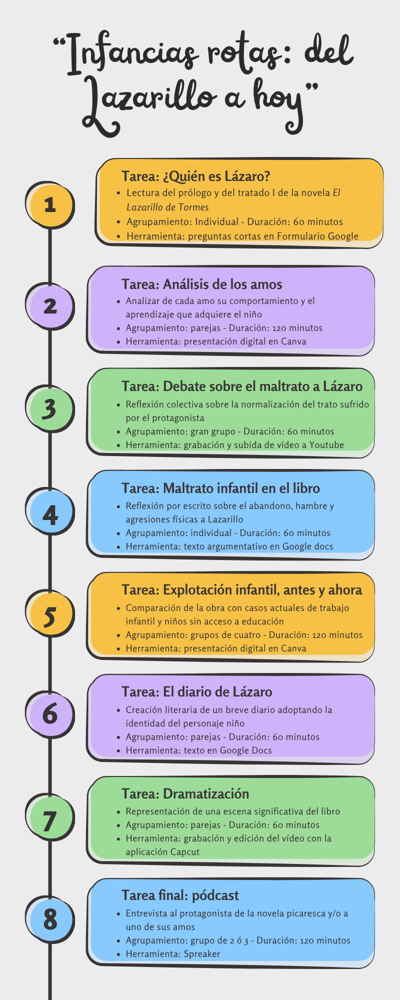

Organización de las tareas y reto final
La situación de aprendizaje está organizada en siete tareas en las que tendréis que trabajar las distintas destrezas de la competencia lingüística. Como reto final, tendréis que grabar un podcast donde pondréis en práctica todos los conocimientos adquiridos a lo largo del proyecto.
Os dejo la línea temporal de la situación de aprendizaje para que sepáis en todo momento por qué fase nos encontramos y qué herramientas digitales tendremos que usar en cada tarea.
